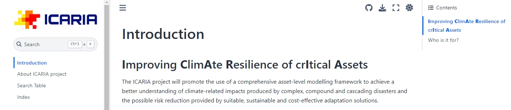

ICARIA cookbook: recipes for data gap filling #
Cookbook structure and general template in Jupyter book #
A Jupyter Book is an open-source framework designed to serve as a generator of digital documents and books by integrating Jupyter Notebooks and Markdown files. It enables the seamless unification and presentation of data, code, and narrative text, making it highly suitable for interdisciplinary research and educational purposes. For combining climate resilience methodologies with data-driven techniques, the Jupyter Book will provide a structured environment for rendering extensive datasets, documenting analytical workflows, and coherently delivering results, ensuring replication, strengthening collaboration within the project, and fostering comprehensive dissemination of findings. In ICARIA, a supporting cookbook will be developed by collecting and compiling datasets and methodologies from the literature in a Jupyter notebook. This notebook will mirror the recipes listed in the initial D1.3 document, creating a scaffold for a more rigid understanding of the data gaps, which will later inform the implementation of Trials and Mini-Trials, prioritizing which gaps tend to appear, yielding fruitful results when addressed with representative methods. More specifically the Jupyter book will be organized as follows: each section of the D1.3 document will be systematically transferred to the Jupyter book, with each section receiving its dedicated chapter. For Chapter 3, which enumerates the cookbook’s recipes, distinct categories—statistical methods, dynamical downscaling methods, data-driven methodologies, expert elicitation methods, and uncertainty treatment methods—will each be allocated a dedicated subsection containing a detailed list of recipes. Representative information for each recipe, as presented in their designed tables, will be transferred to the appropriate subsection. Furthermore, the domain survey data, including the questionnaire, responses, and a summary of results, will be thoroughly documented. Finally, the chapter referring to the reflections on data gaps and supplementary information from the appendix will be incorporated to ensure a comprehensive and scientific presentation. The Jupyter book will be hosted in a GitHub repository, freely accessible, allowing for continuous updates and extensions of the content, besides easy access and modifications by the case study facilitators. A Figure of the footer of the Jupyter book can be seen below.

Cookbook “recipes”#
The following sections contain the technical specifications and tools selected from literature, organized taking into account the main underlying methodology with respect to those identified in Section 3, although it is worth noting that the case studies implementing the suggested “recipes” often adopt hybrid approaches, combining multiple methodologies.
Description of Recipe and Identification:#
Due to the interdisciplinary character and diverse areas of application of the methodologies attempting a totally rigid categorization would only add additional confusion, if not, being far from realistic. Thus, the categorization of the recipes within the cookbook was tailored to align with the project’s objectives. As a result, a straightforward yet effective way to distinguish each recipe while providing a meaningful description was aimed. Each recipe is labeled using the following format:
Recipe - [Category in Cookbook] [Number] [Secondary Category/Example] [Additional Characterization]
An example: a recipe categorized under downscaling methodologies, listed second, focused on statistical downscaling methods and identified as a review paper The unique label would be the following:
Recipe CH01-DD-R, where:
“CH” denotes Climate and Charge Hazard(or EV denotes Exposure and Vulnerability data),
“01” represents the unique number,
“DD” representing data-driven methodologies (if any), and
“R” is appended to indicate it is a review paper. Thus, all labels in recipes within the cookbook will follow the same manner, depending on the subsection and category they belong to.
Statistical methods#
Abbrev |
Categories and data |
||||||||||||||||||||||||
|---|---|---|---|---|---|---|---|---|---|---|---|---|---|---|---|---|---|---|---|---|---|---|---|---|---|
|
|||||||||||||||||||||||||
Recipe Number |
|
||||||||||||||||||||||||
recieps here